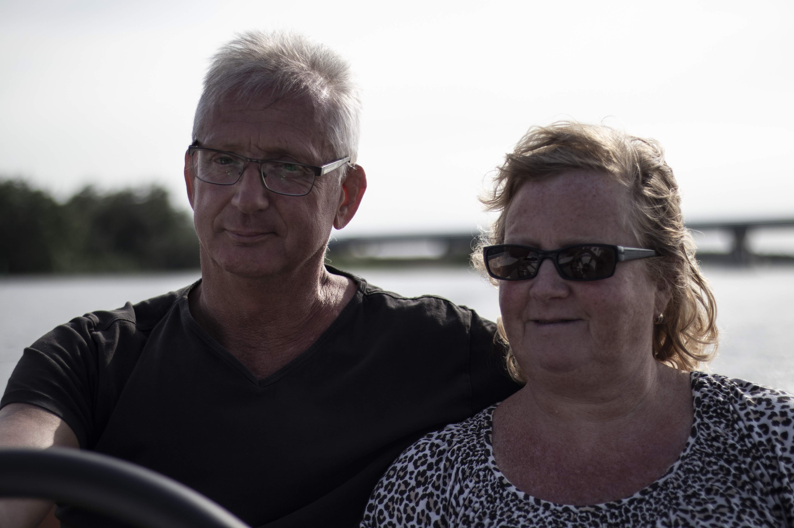
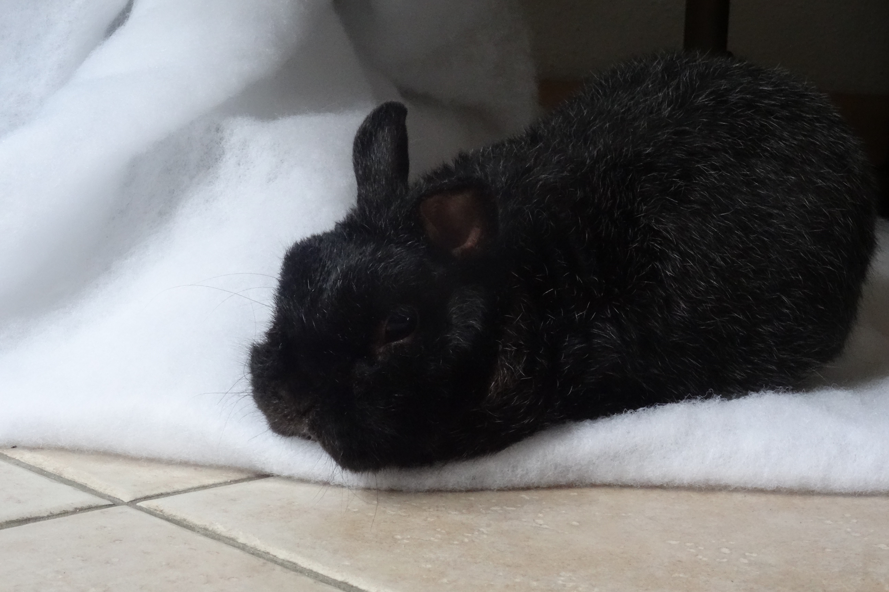
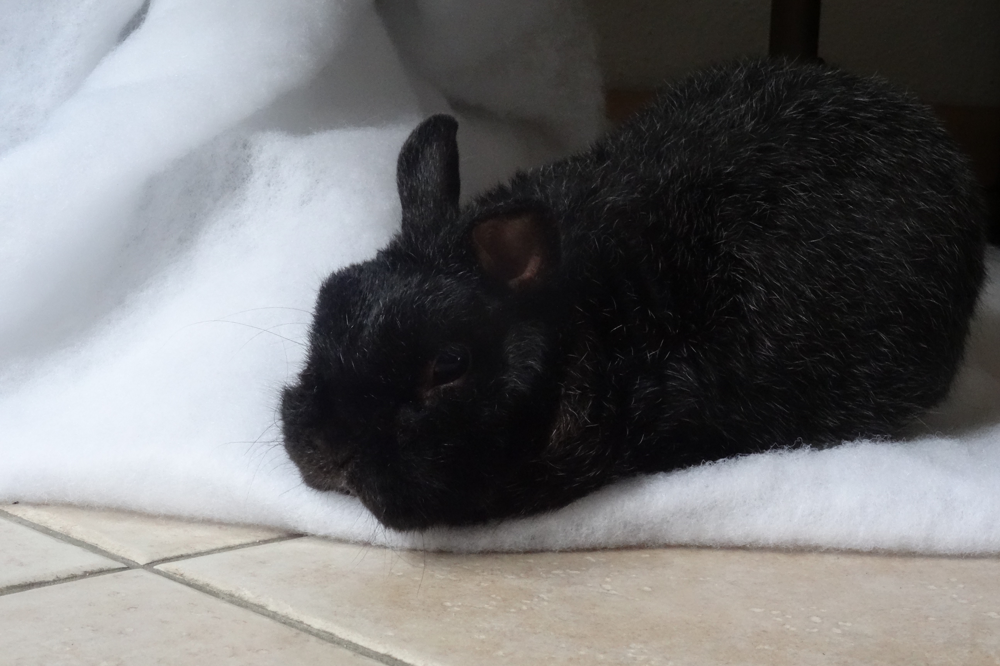

Over Mij
Introductie
Mijn naam is Sander Cokart en ik woon in Emmen, Drenthe, Nederland. Ik werd op 25 April 1998 geboren in het schepers ziekenhuis in Emmen. Ik ben een enorme fanaat als het gaat om alles wat te maken heeft met technologie. Ik heb er vanaf jongs af aan al passie voor en wil graag later werk zoeken in die richting.
Familie
Ik heb één half broer en één half zus, ze komen van mijn vader's kant. Ik zie ze nog wel vaak en bezoek ze wanneer ik kan en hun tijd hebben in Aduard Groningen. Ik woon nog bij mijn ouders in de rietlanden en zal hier voorlopig nog blijven omdat het zoveel goedkoper is dan op kamers gegaan. Mijn ouders zijn nog altijd gelukkig getrouwd en zijn absoluut geweldige ouders. Ik had ooit ook een konijn genaamd Snuffie maar die hebben we helaas in moeten laten slapen omdat hij zijn nieren heeft verpest en hij dus zichzelf vergiftigde.
 

Vorige scholen
OPDC, Speciaal Onderwijs
Helaas weet ik niks meer voor mijn basisschool dus die scholen kan ik niet vertellen maar de basisschool waar ik op heb gezeten heete Het Anker, ik stroomde toen door naar het OPDC wat een slecht idee was want hierdoor raakte ik een jaar extra kwijt en ik had de extra begelijding blijkbaar helemaal niet nodig.

Hondsrug College, VMBO-KGT
Na het OPDC ben ik door gegaan naar het 2e jaar van het hondsrug. Hier was ik ook nooit tevreden aangezien ik vanaf dag één al weer als doelwit werd gezien voor vervelende pesters maar ik heb er wel het beste van kunnen maken en weg kunnen komen met de eerste 9 die mijn engels lerares in 12 jaar nog nooit heeft gegeven voor een mondeling examen.

Drenthe College Anna Paulownalaan, MBO 3 ICT
Na het hondsrug kon ik eindelijk vak gericht werken en dat was fijn. Wat niet zo fijn was is dat deze opleiding al onder mijn huidige skills lag. Ik kon al computers bouwen een wist al heel wat van software ik heb er eigenlijk niks nieuws geleerd. Het enige dat er wel gaaf aan was is mijn stage blij Azerty.nl, de #1 webshop van Nederland. Hier had ik een zeer leuke stage tijd en was veel beter dan de stages die ik kreeg van school. Als je ooit stage moet lopen bij InBetween....veel succes want het is het absoluut niet waard. Ik moest van me zelf MBO 3 afronden als een soort van fail safe mocht het programeren moeilijker zijn dan verwacht. gelukkig heb ik dat kunnen afronden al koste het mij een extra jaar omdat ik bleef zitten in het 3e jaar omdat de stages niet waren afgerond aan het einde van jaar 2.

Drenthe College Van Schaikweg MBO 4 AO
Nu volg ik een opleiding om programeur te worden en dit wou ik al een hele lange tijd. Ik was altijd geinterseerd in programeren en kijk er ook naar uit om hier veel te leren van mensen uit het vak zelf. Het gaat nu heel goed, CSS en HTML waaren een eitje en PHP kreeg ik ook al snel onder de knie op een paar hobbels na. Helaas zit ik nu wel vast met JAVA maar daar word aan gewerkt.